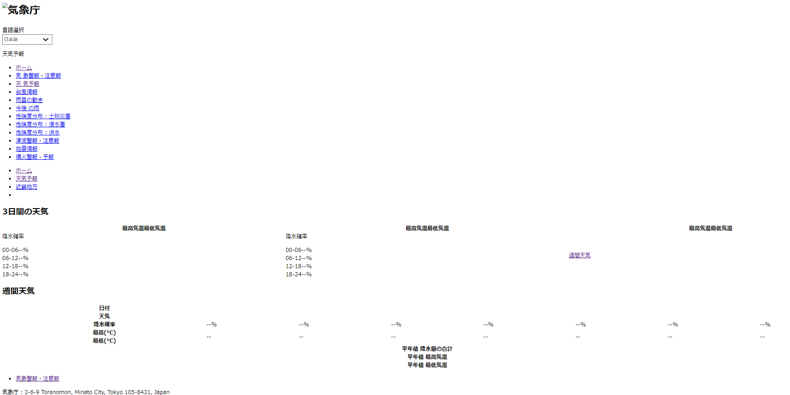

JavaScriptは、webページに動きを付けるために使われることがある。そのようにして作られたページを動的ページという。
ここでは動的ページの例として気象庁の天気予報を扱う。
chroomでは設定画面よりwebページのJavaScriptを禁止することが出来る。本来は好ましくない動作をするページを対策するためのものだが、今回はこれを使いJavaScriptが無い状態のページを確認した。
JavaScriptを禁止するとこのように、ほとんどの情報が消えてしまう。当然このようなページに対してhtmlを読む方法でのスクレイピングを行っても、情報を得ることが出来ない。
まず、pythonのライブラリであるseleniumを用いたスクレイピングを行った。手順は以下の通りである。
pip install seleniumと入力し、seleniumをインストールする。
# ライブラリのインポート
from selenium import webdriver
from selenium.webdriver.chrome.service import Service
from webdriver_manager.chrome import ChromeDriverManager
driver = webdriver.Chrome(service=Service(ChromeDriverManager().install()))
# URLの入力
url = "https://www.data.jma.go.jp/multi/yoho/yoho_detail.html?code=270000&lang=jp"
# ウェブページを開く
driver.get(url)
# 10秒待つ
driver.implicitly_wait(10)
# ページソースを取得
html = driver.page_source
print(html)
driver.quit()
以上の方法で表示したページがこれである。

cssを取得していないため形が崩れているが、ともかく何も情報がないことは理解出来る。リンクを表示出来ているので少しは情報が増えているが、肝心の天気予報が表示されていない。
調べてみると、どうやらJSON文字列に天気予報データやその他の情報が格納し、そこから転送しているらしい。JSON文字列からデータが送られていないため、ハイフンで表示されているというわけだ。APIは有志によりまとめられていた。
大阪の天気予報データを見てみると、以下のようになっていた。
[{"publishingOffice":"大阪管区気象台","reportDatetime":"2024-08-12T17:00:00+09:00","timeSeries":[{"timeDefines":["2024-08-12T17:00:00+09:00","2024-08-13T00:00:00+09:00","2024-08-14T00:00:00+09:00"],"areas":[{"area":{"name":"大阪府","code":"270000"},"weatherCodes":["101","201","201"],"weathers":["晴れ 夜のはじめ頃 くもり","くもり 時々 晴れ 所により 夕方 から 雨 で 雷を伴い 激しく 降る","くもり 時々 晴れ"],"winds":["南西の風 後 北の風","北の風","北東の風 後 南西の風"],"waves":["０．５メートル","０．５メートル","０．５メートル"]}]},{"timeDefines":["2024-08-12T18:00:00+09:00","2024-08-13T00:00:00+09:00","2024-08-13T06:00:00+09:00","2024-08-13T12:00:00+09:00","2024-08-13T18:00:00+09:00"],"areas":[{"area":{"name":"大阪府","code":"270000"},"pops":["10","10","10","20","30"]}]},{"timeDefines":["2024-08-13T00:00:00+09:00","2024-08-13T09:00:00+09:00"],"areas":[{"area":{"name":"大阪","code":"62078"},"temps":["28","38"]}]}]},{"publishingOffice":"大阪管区気象台","reportDatetime":"2024-08-12T17:00:00+09:00","timeSeries":[{"timeDefines":["2024-08-13T00:00:00+09:00","2024-08-14T00:00:00+09:00","2024-08-15T00:00:00+09:00","2024-08-16T00:00:00+09:00","2024-08-17T00:00:00+09:00","2024-08-18T00:00:00+09:00","2024-08-19T00:00:00+09:00"],"areas":[{"area":{"name":"大阪府","code":"270000"},"weatherCodes":["201","201","201","201","201","201","201"],"pops":["","40","30","30","30","30","30"],"reliabilities":["","","B","A","B","B","A"]}]},{"timeDefines":["2024-08-13T00:00:00+09:00","2024-08-14T00:00:00+09:00","2024-08-15T00:00:00+09:00","2024-08-16T00:00:00+09:00","2024-08-17T00:00:00+09:00","2024-08-18T00:00:00+09:00","2024-08-19T00:00:00+09:00"],"areas":[{"area":{"name":"大阪","code":"62078"},"tempsMin":["","27","28","28","26","26","26"],"tempsMinUpper":["","29","29","29","28","28","28"],"tempsMinLower":["","26","26","26","24","24","24"],"tempsMax":["","35","36","35","33","32","34"],"tempsMaxUpper":["","36","37","38","37","36","36"],"tempsMaxLower":["","33","33","34","30","30","32"]}]}],"tempAverage":{"areas":[{"area":{"name":"大阪","code":"62078"},"min":"25.9","max":"33.8"}]},"precipAverage":{"areas":[{"area":{"name":"大阪","code":"62078"},"min":"1.7","max":"22.1"}]}}]
非常に読みにくい。それもそのはず、JSON文字列は改行を挟まず書くため、人が見るにはかなり見にくい形式となっているのである。JSON文字列は「要素：値」の形式になっているため、それを念頭に読み解いていく。
今回のページにおいて重要な部分のみ抜粋し読み解いた物を以下に載せる。
これはこれ以降に書かれてる予報が何時の天気かを示している。
これは天気を3桁の数字で表している。
これは降水確率を示している。
これは最低気温と最高気温を示している。
これは最低気温を示している。
これは最高気温を示している。
これらはそれぞれ気温と降水量の平年値を示している。
以上のことを踏まえて冒頭で示した画像と照らし合わせながらJSON文字列を読み解く。
"weatherCodes":["101","201","201"]は恐らく「晴れ時々曇り、曇り時々晴れ、曇り時々晴れ」ということを表していると考えられる。
"pops":["10","10","10","20","30"]はページに表示されている降水確率と一致しているし、"temps":["28","38"]もページに表示されている8/13の予想最低気温、最高気温と一致している。
同様に読み解いていくと週予想も読み取れるが、ここでは省略する。
このようにJavaScriptを用いた動的ページのスクレイピングをする際には、seleniumを用いたスクレイピングやAPIを用いたJSON文字列の取得、読解が必要になることもある。動的ページのスクレイピングが必要になった際は、今回学んだことを思い出して行おうと思う。
ただしスクレイピングが禁止されているサイトも少なくないため、実際に行う際はその確認が第一に必要である。勿論今回用いた気象庁のページは規約でスクレイピングが許可されている。